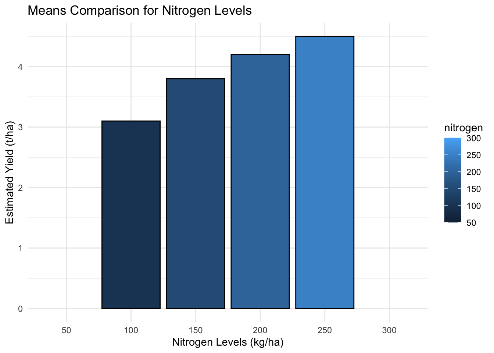
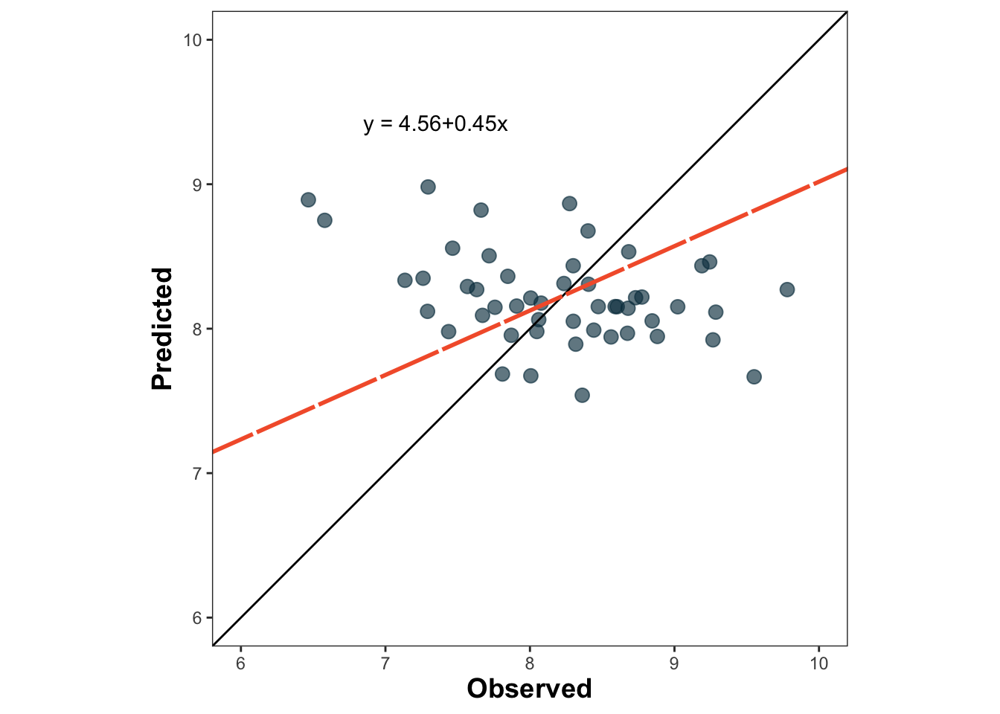

library(pacman)
p_load(dplyr, tidyr)
p_load(ggplot2)
p_load(emmeans, multcomp, multcompView)
p_load(randomForest, caret, metrica)Explanatory vs. Predictive Models in Agriculture with R
statistical modelling
R
agriculture
predictive modeling
1 Introduction
Statistical models in agriculture serve two primary purposes: explanatory and predictive modeling. While explanatory models aim to understand the relationships between variables and identify response patterns, predictive models focus on forecasting future outcomes based on past data. Both approaches are essential for data-driven decision-making in precision agriculture, crop management, and environmental studies.
This article provides an overview of explanatory and predictive models, highlighting their key differences and applications using R.
Required packages:
2 Explanatory Models
Explanatory models are designed to understand how different factors influence a response variable. These models help answer questions such as: What are the main drivers of yield variation? How do nitrogen application and rainfall affect crop performance?
2.1 Example: Linear Regression for Explanation
# Simulated agricultural data
data_ag <- data.frame(
nitrogen = c(50, 100, 150, 200, 250, 300),
rainfall = c(800, 850, 900, 950, 1000, 1050),
yield = c(2.5, 3.1, 3.8, 4.2, 4.5, 4.6)
)
# Fit a linear model
lm_fit <- lm(yield ~ as.factor(nitrogen) + rainfall, data = data_ag)
summary(lm_fit)
Call:
lm(formula = yield ~ as.factor(nitrogen) + rainfall, data = data_ag)
Residuals:
ALL 6 residuals are 0: no residual degrees of freedom!
Coefficients: (1 not defined because of singularities)
Estimate Std. Error t value Pr(>|t|)
(Intercept) 2.5 NaN NaN NaN
as.factor(nitrogen)100 0.6 NaN NaN NaN
as.factor(nitrogen)150 1.3 NaN NaN NaN
as.factor(nitrogen)200 1.7 NaN NaN NaN
as.factor(nitrogen)250 2.0 NaN NaN NaN
as.factor(nitrogen)300 2.1 NaN NaN NaN
rainfall NA NA NA NA
Residual standard error: NaN on 0 degrees of freedom
Multiple R-squared: 1, Adjusted R-squared: NaN
F-statistic: NaN on 5 and 0 DF, p-value: NA2.2 Interpretation
- The coefficients indicate the effect of each predictor on yield.
- The p-values help determine statistical significance.
- The R-squared value explains how much variance is accounted for by the model.
2.3 Means Comparisons
# Perform multiple comparisons
emmeans_fit <- emmeans(lm_fit, ~ nitrogen)
comp <- cld(emmeans_fit, Letters = letters)
comp nitrogen emmean SE df lower.CL upper.CL .group
100 3.1 NaN 0 NaN NaN
150 3.8 NaN 0 NaN NaN
200 4.2 NaN 0 NaN NaN
250 4.5 NaN 0 NaN NaN
50 nonEst NA NA NA NA
300 nonEst NA NA NA NA
Confidence level used: 0.95
P value adjustment: tukey method for comparing a family of 2 estimates
significance level used: alpha = 0.05
NOTE: If two or more means share the same grouping symbol,
then we cannot show them to be different.
But we also did not show them to be the same. 2.4 Visualization
What are we missing here?
# Create ggplot of estimated means
comp_plot <- ggplot(comp, aes(x = as.factor(nitrogen), y = emmean, fill = nitrogen)) +
geom_col(color = "black") +
geom_errorbar(aes(ymin = emmean - SE, ymax = emmean + SE), width = 0.2) +
geom_text(aes(label = .group), vjust = -0.5, size = 5) +
labs(title = "Means Comparison for Nitrogen Levels",
x = "Nitrogen Levels (kg/ha)",
y = "Estimated Yield (t/ha)") +
theme_minimal()
comp_plot
3 Predictive Models
Predictive models aim to forecast future values based on historical data. They are widely used in precision agriculture for yield prediction, disease detection, and climate impact assessments. Machine learning models dominate here. A key challenge in predictive modeling is ensuring that the model generalizes well to unseen data, which is why we use techniques like cross-validation. An advantage is that we don’t need repetitions of the data to use these models, but we need to have a good size so the algorithms can “learn” (machine learning).
3.1 Cross-Validation and Generalization Performance
Cross-validation is a resampling technique used to evaluate a model’s ability to generalize to new data. It helps avoid overfitting, where a model performs well on training data but poorly on unseen data. One common method is k-fold cross-validation, where the dataset is split into k subsets, and the model is trained and tested multiple times.
- Training Error: The error the model makes on the data it was trained on.
- Generalization Performance: The model’s ability to make accurate predictions on unseen data.
- Validation Set Approach: One practical method in agriculture is to leave out data from the latest year as a test set, ensuring the model is evaluated on future-like conditions.
3.2 Updated Agricultural Dataset with Multiple Years
To better illustrate predictive modeling, we expand our dataset to include multiple years, allowing us to simulate a real-world scenario where we leave the latest year out for validation.
# Simulated multi-year agricultural data
data_ag <- data.frame(
year = rep(2011:2020, each = 50), # 20 observations per year
nitrogen = runif(500, 90, 300),
rainfall = runif(500, 700, 1050),
psnt = runif(500, 5, 60), # pre-sidedress N test (ppm)
yield = 2 + 0.01 * runif(500, 90, 300) + 0.005 * runif(500, 700, 1050) + rnorm(500, 0, 0.2) - 0.002 * runif(500, 5, 60)
)
# Splitting into training (excluding latest year) and test set (latest year only)
train_data <- data_ag %>% filter(year < 2020)
test_data <- data_ag %>% filter(year == 2020)3.3 Example: Random Forest with Cross-Validation
# Set seed for reproducibility
set.seed(123)
# Train model with cross-validation using "caret" package
train_control <- caret::trainControl(method = "cv", number = 5)
rf_fit <- caret::train(yield ~ nitrogen + rainfall + psnt, data = train_data, method = "rf", trControl = train_control)note: only 2 unique complexity parameters in default grid. Truncating the grid to 2 .# Model Performance
print(rf_fit)Random Forest
450 samples
3 predictor
No pre-processing
Resampling: Cross-Validated (5 fold)
Summary of sample sizes: 359, 360, 360, 361, 360
Resampling results across tuning parameters:
mtry RMSE Rsquared MAE
2 0.8276507 0.01846057 0.6760507
3 0.8312802 0.01758722 0.6789385
RMSE was used to select the optimal model using the smallest value.
The final value used for the model was mtry = 2.# Predict on the test set
predictions <- predict(rf_fit, test_data)
# Evaluate Generalization Performance
sqrt(mean((predictions - test_data$yield)^2)) # Root Mean Squared Error on test data[1] 0.8748979# Using the metrica package
metrica::RMSE(pred = predictions, obs = test_data$yield)$RMSE
[1] 0.8748979# Plot predicted vs observed scatter
metrica::scatter_plot(pred = predictions, obs = test_data$yield)
# With tidyverse syntax will be...
test_preds <- test_data %>% mutate(predictions = predict(rf_fit, test_data))
metrica::scatter_plot(data = test_preds,
pred = predictions, obs = yield)
# Root mean square error
metrica::RMSE(pred = predictions, obs = test_data$yield)$RMSE
[1] 0.8748979# Relative mean square error (as a proportion)
metrica::RRMSE(data = test_preds, pred = predictions, obs = yield)$RRMSE
[1] 0.1065797# Estimate more prediction error metrics
metrica::metrics_summary(data = test_preds, pred = predictions, obs = yield,
type = "regression") Metric Score
1 B0 4.558434e+00
2 B1 4.458834e-01
3 r -3.703233e-01
4 R2 1.371394e-01
5 Xa 7.437572e-01
6 CCC -2.754306e-01
7 MAE 6.859013e-01
8 RMAE 8.355618e-02
9 MAPE 8.577196e+00
10 SMAPE 8.371905e+00
11 RAE 1.204755e+00
12 RSE 1.529245e+00
13 MBE -9.765955e-03
14 PBE -1.189684e-01
15 PAB 1.245990e-02
16 PPB 2.007823e+01
17 MSE 7.654463e-01
18 RMSE 8.748979e-01
19 RRMSE 1.065797e-01
20 RSR 1.747912e+00
21 iqRMSE 9.206810e-01
22 MLA 1.537834e-01
23 MLP 6.116629e-01
24 RMLA 1.537834e-01
25 RMLP 6.116629e-01
26 SB 9.537387e-05
27 SDSD 1.536881e-01
28 LCS 6.116629e-01
29 PLA 2.009069e+01
30 PLP 7.990931e+01
31 Ue 7.990931e+01
32 Uc 2.007823e+01
33 Ub 1.245990e-02
34 NSE -5.292446e-01
35 E1 -2.047553e-01
36 Erel -7.542440e-01
37 KGE -4.783167e-01
38 d 1.547432e-01
39 d1 1.530369e-01
40 d1r 3.976223e-01
41 RAC 3.622340e-01
42 AC -3.776125e+00
43 lambda -2.754306e-01
44 dcorr 3.659082e-01
45 MIC 2.995257e-013.4 Interpretation
Cross-validation ensures the model is not just memorizing the training data but generalizing well (e.g. predicting well on unseen observations).
Training vs. Test/Validation Performance: Comparing error metrics between the training set and the unseen test set gives an estimate of real-world predictive ability. If the difference training between training error and testing error is too much, it’s very likely our model is “over-fitted” (e.g. reading really well the training data but too much).
Leaving the latest year out allows us to test predictions on future-like data, a common technique in agricultural forecasting.
Using these techniques ensures that predictive models in agriculture provide reliable and actionable insights rather than overfitted results that fail in practice.
Predictive models aim to forecast future values based on historical data. They are widely used in precision agriculture for yield prediction, disease detection, and climate impact assessments.
3.5 Example: Final Random Forest for Forecasting
Now we have our final model, we train one more time with all the available data, then predict new observations
# Fit a random forest model
set.seed(123)
rf_fit <- randomForest(yield ~ nitrogen + rainfall + psnt, data = data_ag, ntree = 500)
print(rf_fit)
Call:
randomForest(formula = yield ~ nitrogen + rainfall + psnt, data = data_ag, ntree = 500)
Type of random forest: regression
Number of trees: 500
No. of variables tried at each split: 1
Mean of squared residuals: 0.6820117
% Var explained: -7.2# Predict yield for new nitrogen and rainfall levels
new_data <- data.frame(field = c("Elora", "Waterloo", "Ridgetown", "Winchester"),
nitrogen = c(125, 175, 225, 220),
rainfall = c(870, 920, 980, 1000),
psnt = c(35, 30, 45, 60))
# Adding predictions
new_preds <- new_data %>% mutate(predictions = predict(rf_fit, new_data))3.6 Interpretation
- This model is non-parametric and learns patterns from data.
- It is robust against outliers and complex interactions.
- Performance is evaluated using Mean Squared Error (MSE) or R-squared.
4 Key Differences Between Explanatory and Predictive Models
| Feature | Explanatory Models | Predictive Models |
|---|---|---|
| Purpose | Understanding relationships | Making accurate forecasts |
| Example | Linear regression, ANOVA | Machine learning (random forests, neural networks) |
| Assumptions | Requires assumptions about data distribution | Often non-parametric, flexible |
| Output | Coefficients, p-values | Predictions, accuracy metrics |
5 Conclusion
Understanding the distinction between explanatory and predictive models is essential for agricultural research. While explanatory models help us understand why certain patterns exist, predictive models allow us to make data-driven decisions for future planning. A combination of both approaches can maximize insights and improve decision-making in precision agriculture.
This article brings simple examples in R using linear regression for explanatory analysis and random forests for prediction. Depending on the research question, both modeling strategies play a crucial role in agricultural data science.